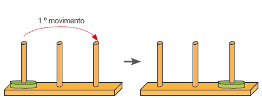
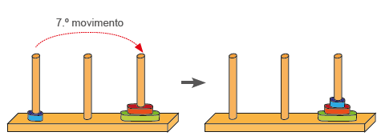
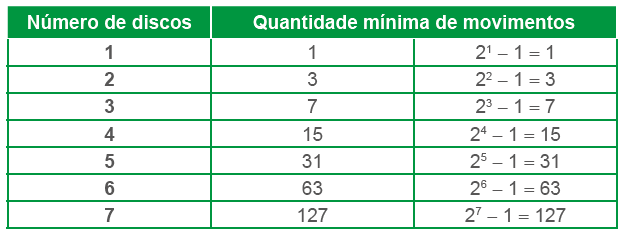
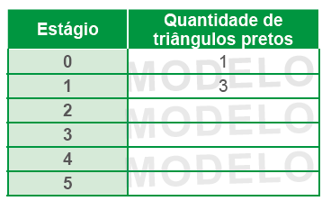

145
UNIDADE 5 - CAPÍTULO 2
Capítulo 2 - Reconhecendo padrões
Desde a antiguidade muitos poetas e matemáticos buscavam rimas, métricas e padrões em suas produções. Ainda hoje podemos identificar esses padrões, observe as situações a seguir.
Situação 1
O rondó português é um poema de forma fixa que pode apresentar um número variável de estrofes. Abaixo, temos o exemplo de um poema escrito por Manuel Bandeira, publicado no livro Estrela da manhã em 1936.
Rondó dos Cavalinhos
Os cavalinhos correndo,
E nós, cavalões, comendo...
Tua beleza, Esmeralda,
Acabou me enlouquecendo.
Os cavalinhos correndo,
E nós, cavalões, comendo...
O sol tão claro lá fora
E em minh’alma — anoitecendo!
Os cavalinhos correndo,
E nós, cavalões, comendo...
Alfonso Reys partindo,
E tanta gente ficando...
Os cavalinhos correndo,
E nós, cavalões, comendo...
A Itália falando grosso,
A Europa se avacalhando...
Os cavalinhos correndo,
E nós, cavalões, comendo...
O Brasil politicando,
Nossa! A poesia morrendo...
O sol tão claro lá fora,
O sol tão claro, Esmeralda,
E em minh’alma — anoitecendo!
Manuel Bandeira (1886– 1968). Poeta brasileiro, também foi professor de literatura, crítico literário e crítico de arte.
1. Troque ideias com um colega e, observando o poema, quais regularidades vocês identificam na sua estrutura? Apresentem as suas conclusões para os colegas e professor.

146
UNIDADE 5 - CAPÍTULO 2
Situação 2
A Torre de Hanói é um jogo matemático que foi popularizado pelo matemático francês Édouard Lucas no ano de 1892. Esse jogo está estruturado por três hastes em uma base, sendo que em uma das hastes temos discos com diâmetros em tamanhos diferentes, conforme a figura ao lado.

O objetivo do jogo é transpor todos os discos de uma haste para outra qualquer, de maneira que um disco maior não fique sobre um menor em nenhuma situação, com a menor quantidade de movimentos possíveis.
Vamos observar como descobrir a menor quantidade possível de movimentos em função da quantidade de discos.
► 1 disco:
Com 1 disco é necessário 1 movimento.
► 2 disco:
![Ilustração de quatro Torres de Hanói. Duas na parte de cima e mais duas abaixo. Na primeira torre, primeira haste, um disco verde sobre a base e um disco vermelho em cima da verde. Uma flecha vermelha acima liga a haste 1 a haste 2. Acima da flecha: primeiro movimento. Uma flecha aponta para a segunda torre, à direita. Na segunda torre à direita e acima, o disco verde está na haste 1 e o disco vermelho na haste dois. Uma flecha vermelha acima liga a haste 1 a haste 3. Acima da flecha: segundo movimento. Na parte debaixo, a terceira Torre tem a primeira haste sem disco, a segunda o disco vermelho e a terceira o disco verde. Uma flecha vermelha acima liga a haste 2 a 3. Acima da flecha: terceiro movimento. Uma flecha aponta para a quarta torre, à direita. Nela, as hastes 1 e 2 estão sem disco. A haste 3 está com os discos. O verde na base e a vermelha em cima da verde.](../../resources/images/unidade5/26.PNG)
Com 2 discos são necessários 3 movimentos.
► 3 disco:
![Ilustração de oito Torres de Hanói. Três na parte de cima, mais três no meio e mais duas torres abaixo. Na primeira torre e primeira haste, três discos: o verde maior e junto à base, o vermelho de tamanho intermediário e vermelho e o disco azul menor e em cima do vermelho. Uma flecha vermelha acima liga a haste 1 a haste 3. Acima da flecha: primeiro movimento. Uma flecha aponta para a segunda torre, à direita. Na segunda torre, o disco verde está na haste 1 e o disco vermelho em cima do verde. A segunda haste sem disco. A terceira haste com um disco azul. Uma flecha vermelha acima liga a haste 1 a haste 2. Acima da flecha: segundo movimento. Uma flecha aponta para a terceira torre, mais à direita. Na terceira torre, o disco verde está na haste 1, o disco vermelho na haste 2 e o disco azul, na haste 3. Uma flecha vermelha acima liga a haste 2 a haste 3. Acima da flecha: terceiro movimento.
Na parte do meio, a quarta Torre. Ela tem na primeira haste o disco verde, na segunda haste o disco vermelho sobre a base e o disco azul em cima da vermelha. A terceira haste sem disco. Uma flecha vermelha acima liga a haste 1 a 3. Acima da flecha: quarto movimento. Uma flecha aponta para a quinta torre, à direita. Nela, a haste 1 está sem disco, a haste 2 com o disco vermelho sobre a base e o disco azul sobre a vermelha. A haste 3 com o disco verde. Uma flecha vermelha acima liga a haste 2 a haste 1. Acima da flecha: quinto movimento. Uma flecha aponta para a sexta torre, mais à direita. Nela, a haste 1 está com o disco azul, a haste dois com o disco vermelho e a haste 3 com o disco verde. Uma flecha vermelha acima liga a haste 2 a haste 3. Acima da flecha: sexto movimento.](../../resources/images/unidade5/27.PNG)
147
UNIDADE 5 - CAPÍTULO 2
Com 3 discos são necessários 7 movimentos.
No quadro a seguir, temos representada a quantidade mínima de movimentos necessários para uma quantidade qualquer de disco.
1. Troque ideias com um colega e escrevam, em seus cadernos, uma expressão algébrica que permita calcular a quantidade mínima de movimentos em função da quantidade de discos. Considerar n como uma quantidade de disco qualquer.
2. Usando a expressão algébrica escrita por vocês, calculem a quantidade mínima de movimentos para 8, 9 e 10 discos.
Situação 3
Observe as duas expressões algébricas apresentas a seguir:
(n + 3) + (n - 4)
2n - 1
Atribuindo valores para n de 1 a 5, podemos escrever as sequências numéricas que estas expressões representam:
A expressão algébrica (n + 3) + (n - 4) representa a sequência numérica 1, 3, 5, 7, 9 e a expressão 2n - 1 também representa a mesma sequência numérica.
Quando duas expressões algébricas descrevem a regularidade de uma mesma sequência numérica, elas são chamadas de expressões algébricas equivalentes.
148
UNIDADE 5 - CAPÍTULO 2
ENCONTRE SOLUÇÕES
1. Wacław Sierpiński (1882–1969) foi um matemático polonês que em 1916 criou uma curva chamada Triângulo de Sierpinski. A partir de um triângulo equilátero e pegando o ponto médio (ponto que divide um segmento de reta em duas partes de mesma medida) de seus três lados podemos dividi-lo em quatro triângulos congruentes, dos quais retiramos o triângulo central. Observe:
Nos estágios seguintes, a subdivisão continua em triângulos cada vez menores respeitando o mesmo critério.
![Quatro triângulos com o triângulo central na cor branca retirado.
O primeiro com quatro triângulos brancos. O primeiro é o central retirado. Os outros três localizados: o primeiro, à esquerda; o segundo, acima; e o terceiro, à direita. Os triângulos pretos são 3 vezes 3.
O segundo com 13 triângulos brancos. O primeiro é o central retirado. Os outros 12 localizados: quatro à esquerda do triângulo central, quatro acima e mais quatro, à direita. Os triângulos pretos são 9 vezes 3.
O terceiro com 37 triângulos brancos. O primeiro é o central retirado. Os outros 36 localizados: 12 à esquerda do triângulo central, 12 acima e mais 12, à direita. Os triângulos pretos são 27 vezes 3.
O quarto com 109 triângulos brancos. O primeiro é o central retirado. Os outros 108 localizados: 36 à esquerda do triângulo central, 36 acima e mais 36, à direita. 81 vezes 3.](../../resources/images/unidade5/34.PNG)
a) Observando as figuras, complete o quadro a seguir com a quantidade de triângulos pretos que teremos em cada um dos estágios.
b) Escreva uma expressão algébrica que permita calcular a quantidade de triângulos pretos em qualquer estágio.
2. As amebas são parasitas intestinais e unicelulares que causam uma doença infecciosa chamada amebíase. Uma ameba se reproduz por meio de um simples processo de divisão celular, ou seja, ela se divide por um processo chamado mitose, em duas novas células. Observe:

a) Em seu caderno, construa uma tabela relacionando o tempo com a quantidade de amebas que foram reproduzidas, a partir de uma única ameba, até o tempo 6.
b) Escreva uma expressão algébrica que permita calcular a quantidade de amebas que foram reproduzidas a partir de uma célula para qualquer tempo.
3. Observe as sequências numéricas a seguir e escreva uma expressão algébrica que permita identificar o valor numérico para qualquer elemento da sequência, de acordo com a posição que ele ocupa.
a) 4, 16, 64, 256, 1024
b) 3, 6, 9, 12, 15, 18
c) 3, 5, 7, 9, 11, 13,15
4. Observe as expressões
algébricas:
3(n + 1)
+ 2 e 3n
+ 5. Atribua valores de 1 a 5 para
n e escreva a sequência numérica que estas expressões representam.
Podemos afirmar que elas são expressões algébricas equivalentes?